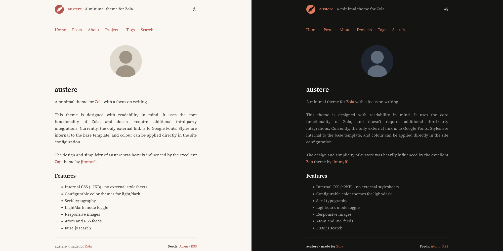

A minimal theme for Zola with a focus on writing.
Live Demo: My personal website
The austere theme is designed with readability in mind. It uses the core functionality of Zola, and doesn't require additional third-party integrations. Currently, the only external link is to Google Fonts. Styles are internal to the base template, and colour can be applied directly in the site configuration.
The design and simplicity of austere was heavily influenced by the excellent Zap theme by jimmyff.

Download this theme to your themes directory:
cd your-zola-site
git submodule add https://github.com/tomwrw/austere-theme-zola themes/austereSet the theme in your config.toml:
theme = "austere"Copy the example content to get started (optional):
cp -r themes/austere/content/* content/Here you can find an example config.toml to use for your site with the austere theme. Make sure you change:
# Site title.
title = "austere"
# Site description.
description = "A minimal theme for Zola with a focus on writing."
# Base URL for your site.
base_url = "https://www.tomwrw.co.uk"
# No SASS - CSS is internal (located in base.html template).
compile_sass = false
# Search index enabled.
build_search_index = true
# Default site language.
default_language = "en"
# Feeds.
generate_feeds = true
# Specify feed filenames.
feed_filenames = ["atom.xml", "rss.xml"]
# Taxonomies.
taxonomies = [{ name = "tags", feed = true }]
[search]
# Required for search page to work.
index_format = "fuse_javascript"
[markdown]
# Required for code highlighting blocks.
highlight_code = true
highlight_theme = "css"
[slugify]
# Controls slugification for page/section URLs.
paths = "on"
# Controls slugification for taxonomy terms (tags, categories, etc.).
taxonomies = "on"
# Controls slugification for heading anchors (H1 to H6 etc.).
anchors = "on"
[extra]
# Keywords for SEO.
keywords = "zola, theme, minimal"
# Site icon in header (optional - comment out to hide).
site_icon = "quill.svg"
# Header strapline (optional - comment out to hide).
strapline = "A minimal theme for Zola"
# Footer text (optional - comment out to hide).
footer_text = "austere - made for <a href='https://getzola.org'>Zola</a>"
# Favicon (optional - comment out to hide).
favicon = "/favicon.ico"
# Profile picture on home page (optional - comment out to hide).
profile_picture = "/images/profile.svg"
# Enable inline SVG icons (uses sprite sheet).
inline_icons = true
icon_path = "static/icons/"
icons = ["light", "asleep", "rss"]
# Responsive images
image_format = "auto"
image_quality = 80
images_default_size = 1024
images_sizes = [512, 1024, 2048]
# Navigation menu.
menu_links = [
{ url = "$BASE_URL/", name = "Home" },
{ url = "$BASE_URL/posts/", name = "Posts" },
{ url = "$BASE_URL/about/", name = "About" },
{ url = "$BASE_URL/projects/", name = "Projects" },
{ url = "$BASE_URL/tags/", name = "Tags" },
{ url = "$BASE_URL/search/", name = "Search" },
]
# Custom colour themes. Adjust here to apply own colour.
# Light colours.
[extra.colours.light]
background = "#FAF7F2"
text = "#1a1a1a"
text_muted = "#3a3a3a"
accent = "#9E4440"
accent_hover = "#7A3533"
code_bg = "#f0ebe3"
border = "#e0d9ce"
# Dark colours.
[extra.colours.dark]
background = "#141413"
text = "#e8e8e8"
text_muted = "#a0a0a0"
accent = "#E07A5F"
accent_hover = "#F4A594"
code_bg = "#1e1e1d"
border = "#2a2a29"
All theme options go under [extra] in your config.toml:
| Option | Description | Default |
|---|---|---|
strapline | Tagline shown in header | (none) |
favicon | Path to favicon | (none) |
profile_picture | Profile image on home page | (none) |
keywords | SEO meta keywords | (none) |
footer_text | Footer HTML content | (none) |
[extra]
strapline = "Welcome to my website"
favicon = "/favicon.ico"
profile_picture = "/images/me.png"
keywords = "blog, writing, zola"
footer_text = "Made with <a href='https://getzola.org'>Zola</a>"[extra]
menu_links = [
{ url = "$BASE_URL/", name = "Home" },
{ url = "$BASE_URL/posts/", name = "Posts" },
{ url = "$BASE_URL/about/", name = "About" },
{ url = "$BASE_URL/projects/", name = "Projects" },
{ url = "$BASE_URL/tags/", name = "Tags" },
{ url = "$BASE_URL/search/", name = "Search" },
]Customize the color scheme for light and dark modes:
[extra.colours.light]
background = "#FAF7F2"
text = "#1a1a1a"
text_muted = "#3a3a3a"
accent = "#9E4440"
accent_hover = "#7A3533"
code_bg = "#f0ebe3"
border = "#e0d9ce"
[extra.colours.dark]
background = "#141413"
text = "#e8e8e8"
text_muted = "#a0a0a0"
accent = "#E07A5F"
accent_hover = "#F4A594"
code_bg = "#1e1e1d"
border = "#2a2a29"[extra]
image_format = "auto" # auto, webp, jpg, png
image_quality = 80 # 1-100
images_default_size = 1024
images_sizes = [512, 1024, 2048][extra]
# Umami Analytics
umami_website_id = "your-website-id"
umami_src = "https://cloud.umami.is/script.js" # optional, custom domain
umami_domains = "yoursite.com" # optional, limit tracking
# OR Google Analytics
google_analytics_tag_id = "G-XXXXXXXXXX"Create posts in content/posts/:
+++
title = "My Post Title"
date = 2024-01-15
description = "A brief description for SEO"
[taxonomies]
tags = ["zola", "blogging"]
+++
Your content here...For posts with images, use a folder structure:
content/posts/my-post/
├── index.md
└── image.jpgCreate standalone pages in content/:
+++
title = "About"
template = "page.html"
+++
Page content...Create content/projects/_index.md:
+++
title = "Projects"
template = "projects.html"
+++Then create content/projects/projects.toml:
[[projects]]
title = "Project Name"
emoji = "🚀"
description = "What this project does"
url = "https://github.com/you/project"
image = "screenshot.png" # optional, relative to projects folder
date = "2024"
status = "Active"
tags = ["rust", "web"]Create content/search.md:
+++
title = "Search"
template = "search.html"
+++{{ image(src="photo.jpg", alt="Description") }}{{ youtube(id="dQw4w9WgXcQ") }}
{{ youtube(id="dQw4w9WgXcQ", autoplay=true) }}{{ spotify(id="album-id") }}Override these macros in your own templates/macros/hooks.html:
{%/* macro post_above_content(page) */%}
<!-- Content before post body -->
{%/* endmacro */%}
{%/* macro post_below_content(page) */%}
<!-- Content after post body -->
{%/* endmacro */%}
{%/* macro post_below_tags(page) */%}
<!-- Content after post tags -->
{%/* endmacro */%}
{%/* macro posts_below_title(page) */%}
<!-- Content after post title in list view -->
{%/* endmacro */%}Add a preview image to any page:
+++
[extra]
og_preview_img = "preview.jpg"
+++MIT